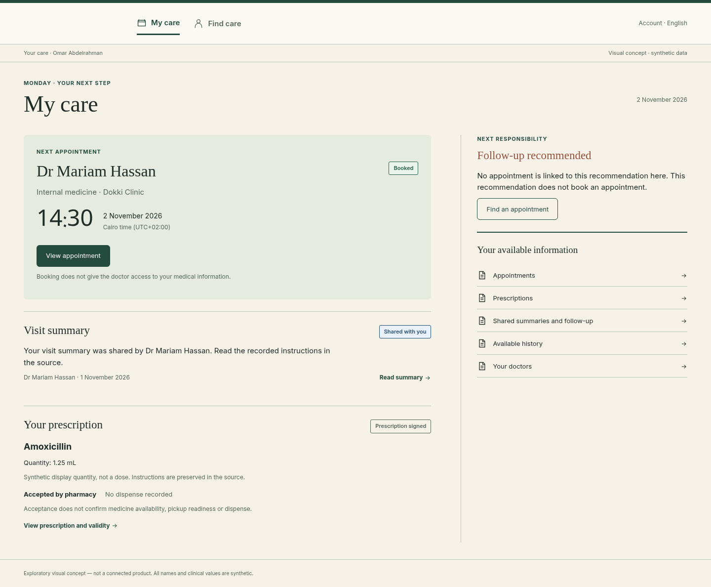
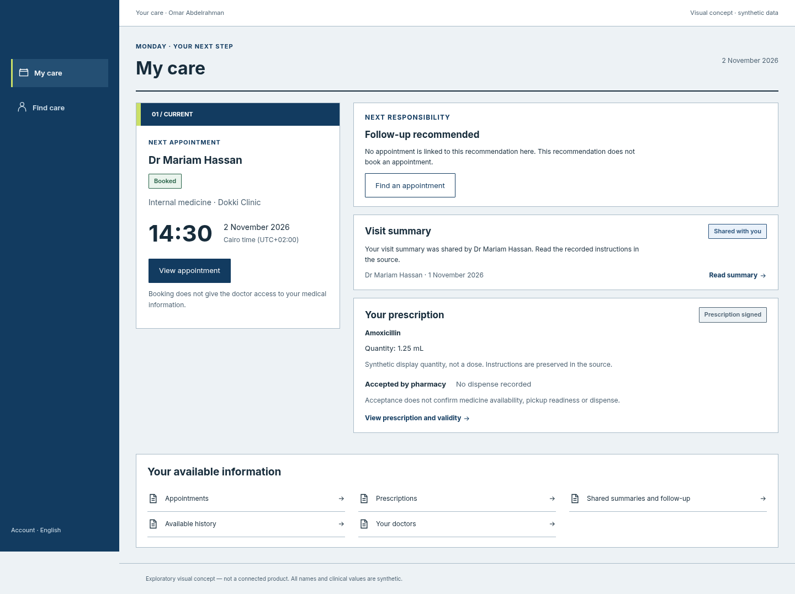
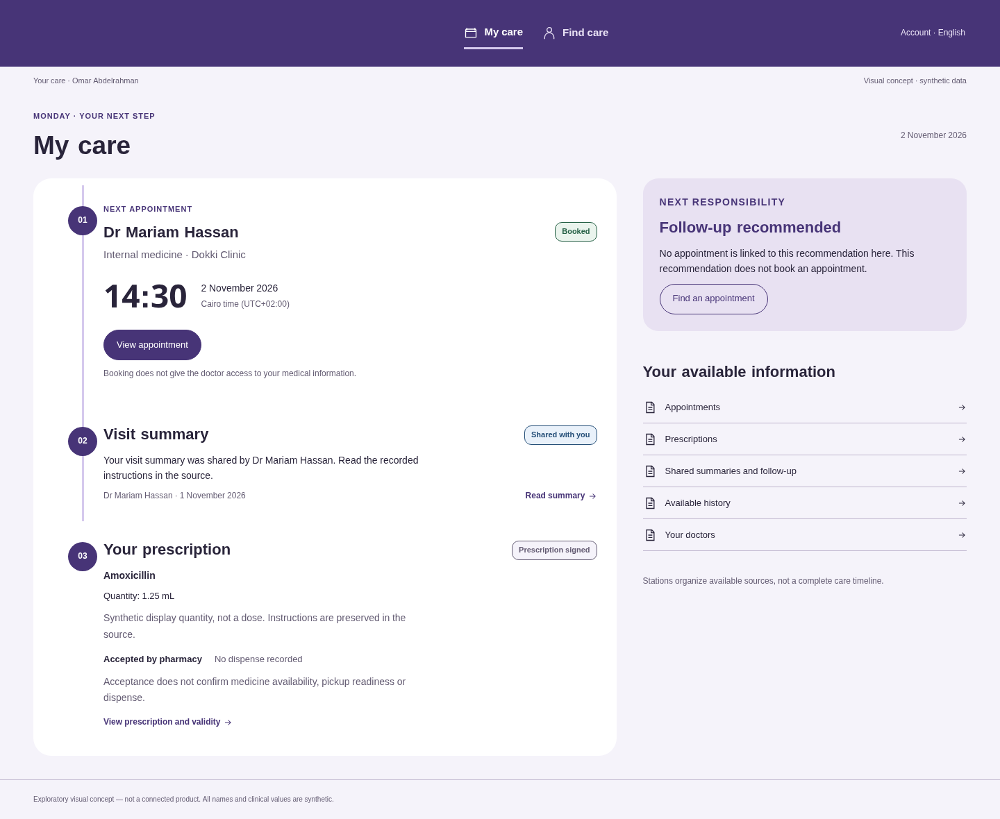

LOGO-FREE COMPARISON · EQUIVALENT SYNTHETIC CARE FACTS · EXPLORATORY
Open margins, fine rules and gently softened paper edges

Serif/Naskh display, warm paper, open editorial columns and margin annotations. No permanent sidebar for Patient.
Square geometry, aligned rails, short rectangular indexes

Dark side rail, squared work planes, tabular rhythm, three-pane consultation and explicit indexes.
Broad round ends, vertical spines and open station markers

Horizontal masthead, rounded care lane, station spine, Kufi display and indigo wayfinding.